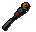
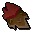

Your delve runs
9+ uses the level-9 rates and nine floor rolls per run. Maximum 1,000,000 floor rolls per simulation.
Your loot

Nothing claimed yet
Choose your delve depths, then simulate to see the spoils of the Doom.
Unique rewards
Collected loot
0 typesQuantities are combined across simulated runs. Simulate again to reroll.
Dry calculator results

How lucky are your drops?
Choose your delve runs, enter your four drop counts, and calculate the odds.
Chances for each item across the configured delve runs.
Results are calculated separately for each item, not as one combined chance. Equipment rewards share a unique roll, while Dom rolls independently. Very small probabilities may round to zero.